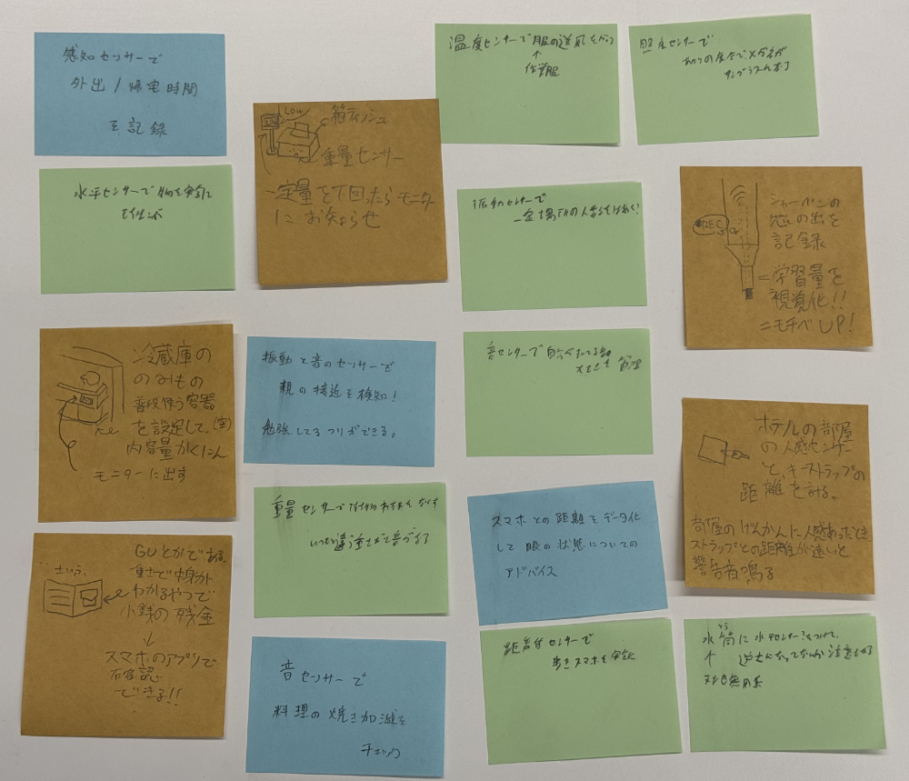

IoTによるデータ保存
2025/04/27
【グループワークした内容】

今回の授業で光センサーを使用したので、グループワークでのアイデアも
センサーを用いた物がほとんどです。
この中で自分のお気に入りは、「冷蔵庫の内容量を確認できる」やつで、
これは普段自分が飲食店でアルバイトしているときに、
・飲み物の減りがすぐ確認できたら嬉しいなと考えていた
・残り少ない飲み物の補充や注文が楽になる
・飲み物の減り具合をデータ化することで、それぞれの飲み物が
いつ多く出るのか(曜日や季節ごとの傾向)、人気の飲み物は何かを
考えられること
に起因しています！
こういうアイデアを出すときは、割と空想的なものを出しがちだったので、
今回のアイデアはかなり現実的かつ実用的に収まって自分の中ではだいぶ
満足しました。なんなら、実際に作ってみようかな？